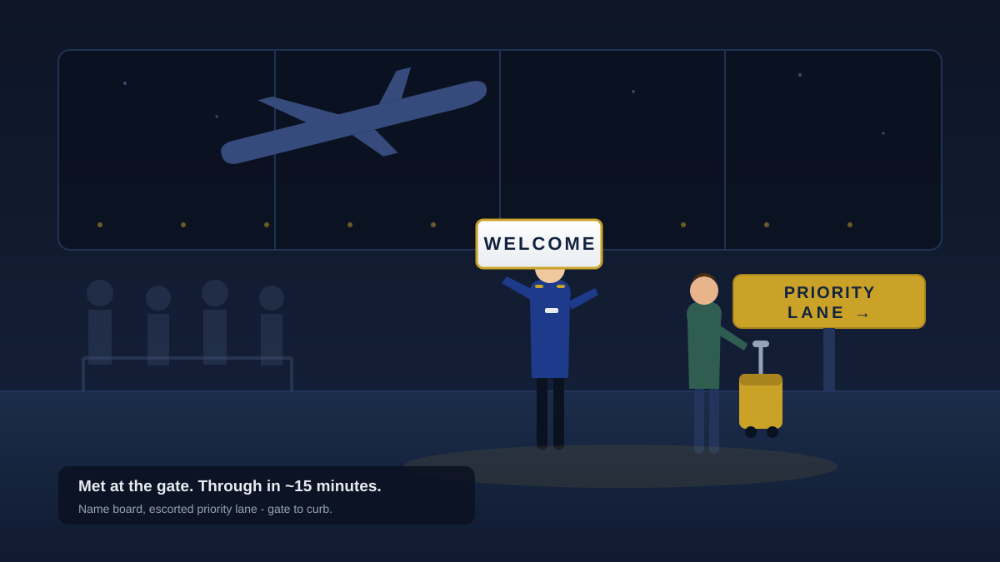

什么是机场快速通关?
快速通关(fast track / meet & greet)是一种机场接机陪同服务:
- 机舱门口接机 - 工作人员举着写有你名字的牌子,在登机口/廊桥出口等你,不会错过。
- 优先通道入境 - 陪同你走机组和贵宾使用的优先移民柜台,通常2-5分钟办完。
- 送到到达大厅 - 陪同到行李转盘、海关,一直送出到达大厅,全程约10-15分钟。
外国护照不能使用越南的自助入境闸机,普通通道只有人工柜台一条队,所以高峰时段排队完全无法靠"走快点"解决 - 优先通道是唯一的捷径。
谁最需要快速通关?
- 带老人和小孩的家庭 - 长途飞行后再站一小时排队,老人孩子最难受。
- 晚高峰/凌晨到达 - SGN傍晚、HAN清晨欧洲航班波次,排队最长。
- 要转越南国内航班的人 - 入境排队直接吃掉转机时间,见转机攻略。
- 春节、寒假等旺季出行 - 节日期间客流翻倍,见春节高峰攻略。
反过来说,如果你在淡季中午落地、不赶时间,排队可能只要20-30分钟,可以不买 - 本站只讲实情。
三大机场排队实况
| 机场 | 高峰排队 | 最坏时段 | 攻略 |
|---|---|---|---|
| 新山一 SGN(胡志明) | 60-100分钟 | 傍晚+周末抵达高峰 | SGN攻略 |
| 内排 HAN(河内) | 45-90分钟 | 5-8点欧洲波次、19-22点东亚波次 | HAN攻略 |
| 岘港 DAD | 20-40分钟 | 春节、包机团队集中到达 | DAD攻略 |
中文攻略目录
- 河内内排机场入境排队与快速通道 - T2两个航班波次的排队规律、接机流程
- 胡志明新山一机场入境攻略 - 越南最长入境队伍,什么时候最值得买
- 岘港机场快速通关 - 通常最快,但春节和包机波次照样排
- 越南机场转机:国际转国内攻略 - HAN的T2转T1、SGN国际楼转国内楼,最低转机时间
- 春节越南机场入境:高峰期快速通关攻略 - 2026春节(2月17日)前后客流与预订建议
- 越南电子签证申请攻略 - 官网入口、$25/$50费用、出签时长、口岸填写常见错误
- 越南机场入境要排多久? - 三大机场按时段按季节的诚实排队数据
- 带老人小孩飞越南 - 婴儿车gate check、轮椅预约、全家一起走优先通道
- 越南机场出境快速通关攻略 - 值机/安检/出境移民三道队怎么压短
快速通关服务本身的工作原理,可以看运营方的中文说明:越南机场快速通关如何运作。
常见问题
什么是越南机场快速通关?
一种接机陪同服务:工作人员在机舱门口举牌接你,带你走优先通道办理入境手续,陪同到行李转盘和到达大厅,全程约10-15分钟。
越南机场入境排队要多久?
新山一(SGN)晚高峰常见60-100分钟;内排(HAN)高峰航班波次45-90分钟;岘港(DAD)通常20-40分钟。外国护照不能用自助闸机,所有人都要排人工柜台。
快速通关多少钱?
按人按机场收费,从$25起/人。预订后2个工作小时内确认,无需预付 - 见面当天付现金给工作人员。
有中文服务吗?
有。运营方AAL Fast Track配有中文服务人员,预订和当天沟通都可以用中文。
约15分钟机舱门到出口 - 运营方平均通关时间
≤2小时工作时间内预订确认
从$25起每人 - 按机场和套餐定价
中文服务中文工作人员可全程沟通